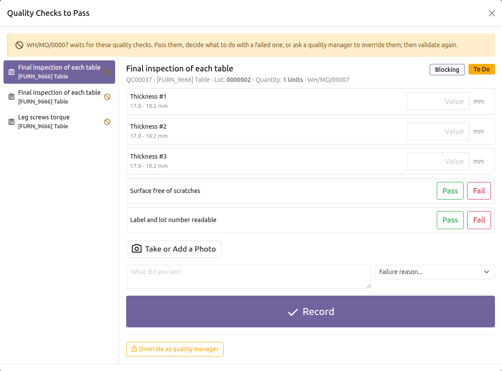
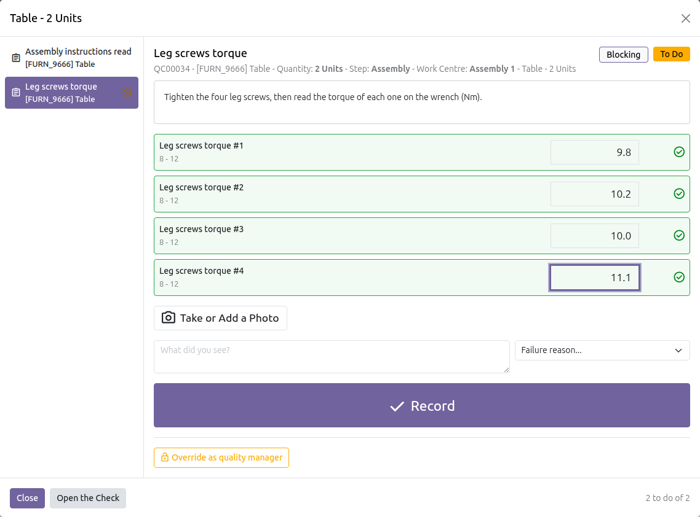
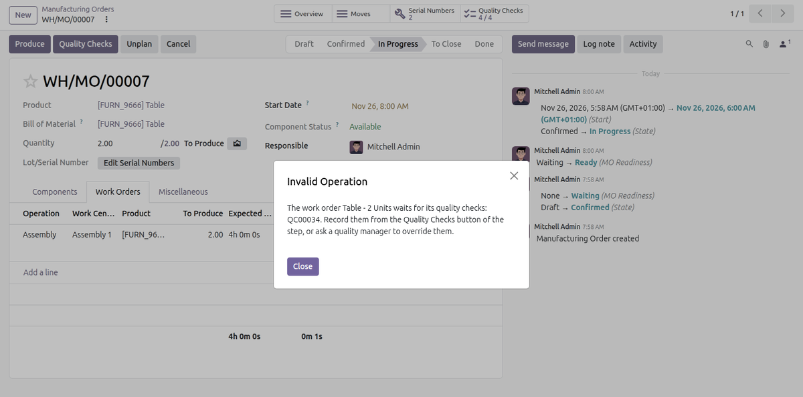
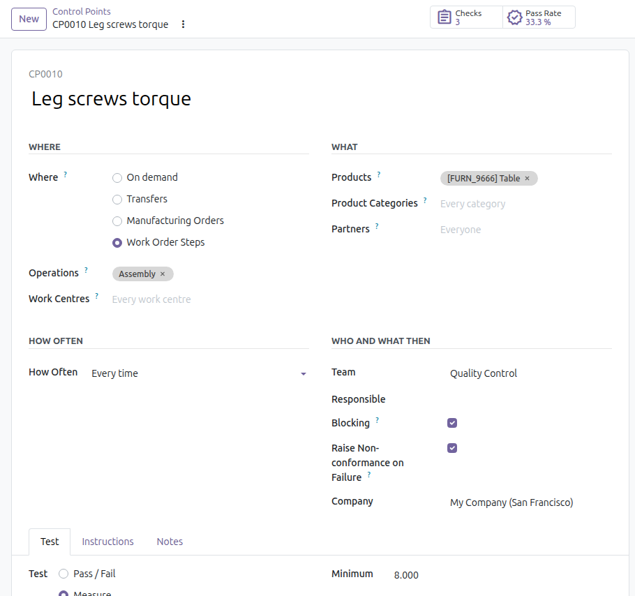
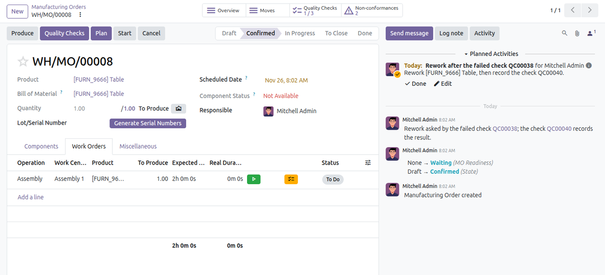

Produce
Final inspection of each serial

✓ One check per finished serial number.
✓ Produce waits until they pass.
Work order
Checks on the step

✓ Measures and instructions per operation.
✓ Opened from the work order line.
Blocking step
The step waits too

✓ Finishing the work order asks for its checks first.
Override
Accepted under deviation

✓ A quality manager overrides with a reason.
✓ Logged on the order.
Control point
On operations and work centres

✓ Operations, work centres, products.
Order
Quality Checks on the order

✓ Checks to do on the order and on each work order line.